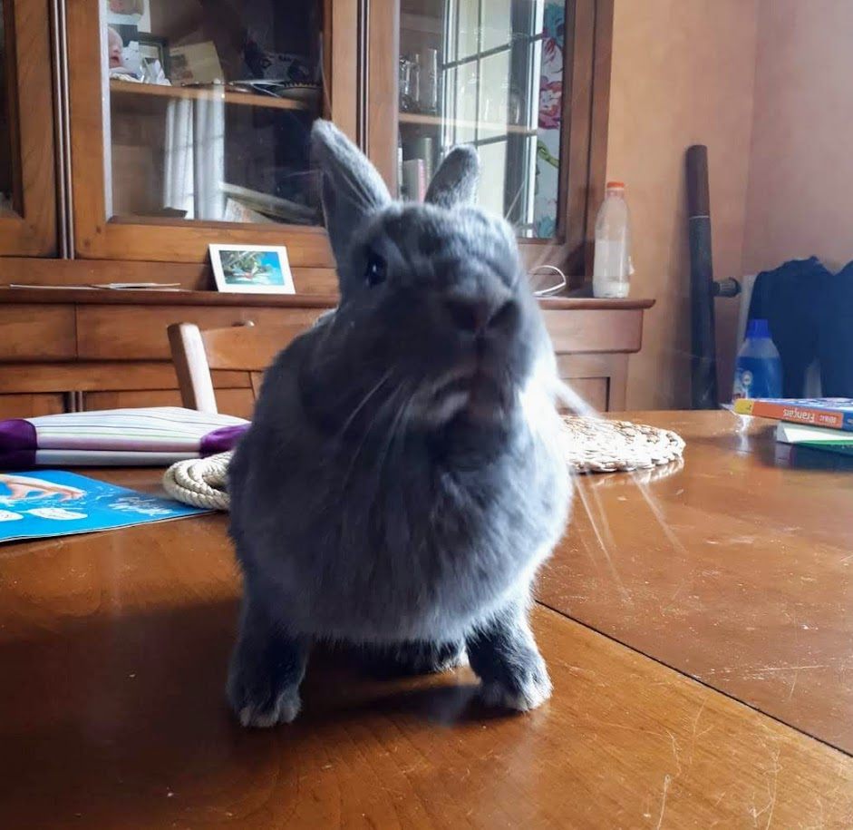

- Bouncing (without trampoline) Guinness World Record
- Carrot relay race
- Olympic hedgehog obstacles
This Wolfy is awesome.
Are you sure you're ready for this? If not... better to give up now. Still up for the ride? Jump on then!!
Jump on